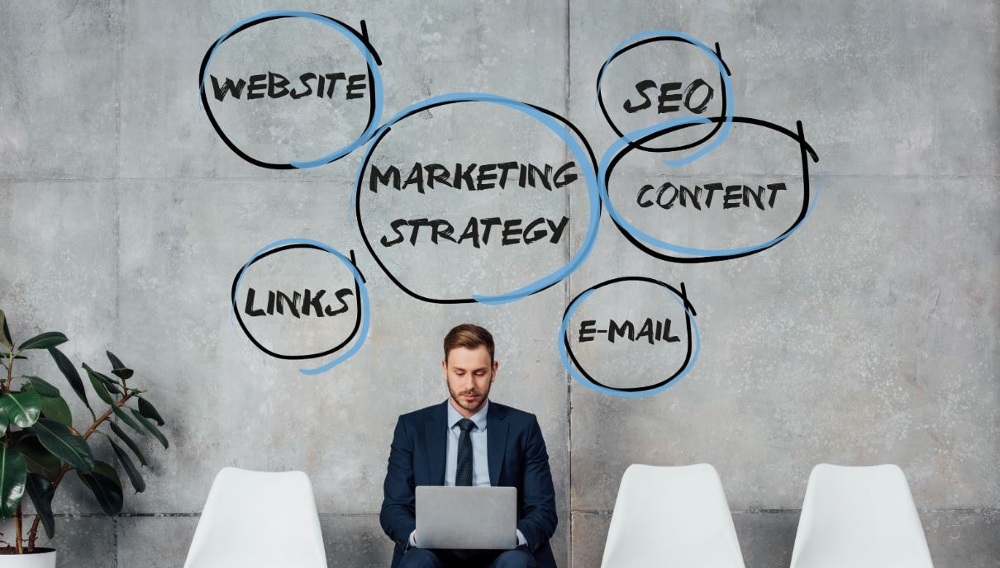

I nostri servizi comprendono attività di supporto e consulenza specializzata per risolvere problematiche aziendali, ottimizzare processi e raggiungere obiettivi strategici. Tra i principali servizi offerti ci sono:
Supporto nella definizione e implementazione di strategie aziendali per raggiungere obiettivi a lungo termine, ottimizzando risorse e processi.

Analisi e miglioramento delle operazioni aziendali quotidiane, con l’obiettivo di aumentare l'efficienza, ridurre i costi e ottimizzare i flussi di lavoro.

Assistenza nella gestione delle risorse finanziarie, pianificazione fiscale, analisi degli investimenti e ottimizzazione della struttura del capitale.
Sviluppo di strategie di marketing per aumentare la visibilità del brand, migliorare la comunicazione con il pubblico e ottimizzare le campagne pubblicitarie.
Supporto nell’adozione di tecnologie avanzate, gestione dei sistemi informatici aziendali, trasformazione digitale e protezione dei dati.
Gestione del talento, formazione del personale, ottimizzazione delle politiche di assunzione, sviluppo delle competenze e creazione di ambienti di lavoro produttivi.